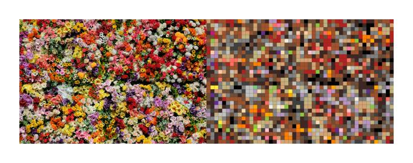

How to Make a Perler Bead Pattern from Any Photo
A step-by-step guide to choosing a photo, generating a bead pattern, reading the shopping list, and printing your first project.
Practical tutorials for turning photos into printable bead patterns, choosing better source images, planning bead counts, and making easy family craft projects.

A step-by-step guide to choosing a photo, generating a bead pattern, reading the shopping list, and printing your first project.
A practical color reference for planning photo bead patterns, choosing color limits, and reading BeadSnap's bead palette.
A simple guide to bead counts, pegboard space, color planning, and shopping lists before starting a photo bead pattern.
These upcoming guides will become separate SEO pages, so each Pinterest pin and search result can land on the most relevant tutorial.
Now live: a reference page for bead colors, matching notes, and printable planning.
Now live: a simple guide to bead counts, board sizes, and shopping list planning.
Beginner-friendly project ideas that point naturally to the free pattern pack.
Photo selection tips to help users get cleaner patterns from the tool.
Printable PDF patterns for easy family craft projects. No spam, just cute bead ideas.
✅ Thanks! Your free patterns are on the way.
Your download should start automatically. If not, click here to open the PDF.